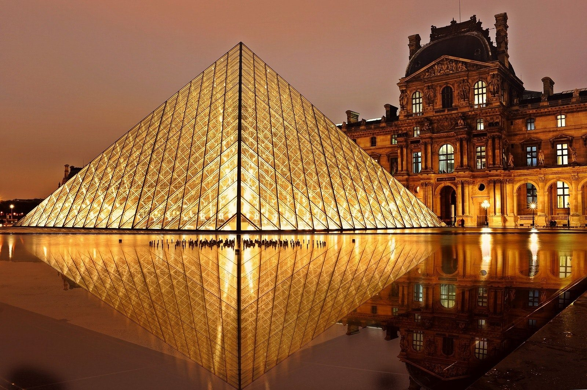

Seja bem vindo!
Aqui lhes apresento as 5 cidades mais bonitas do nosso Brasilzão
Busca feita por este siteEu tenho um ódio sem sentido.
Me acho um número sem encaixe, ímpar.
E sabe, eu odeio números ímpares.
1 - Blumenau - SC

2 - Ouro Preto - MG
3 - Salvador - BA
4 - Fernando de Noronha - PE
5 - Rio de Janeiro - RJ
Blumenau é um município do estado de Santa Catarina, Região Sul do Brasil. Localiza-se na microrregião homônima e na Mesorregião do Vale do Itajaí. É a cidade-sede da Região Metropolitana do Vale do Itajaí. É o terceiro município mais populoso do estado, o 8º da Região Sul do Brasil, o 78º do Brasil e a única cidade média-grande de Santa Catarina, constituindo um de seus principais polos industriais, tecnológicos e universitários.
FonteOuro Preto é um município brasileiro localizado no estado de Minas Gerais, na Região Sudeste do país. Sua população recenseada em 2022 era de 74 824 habitantes.[1] Localiza-se na latitude 20º23'08" sul, longitude 43º30'29" oeste e altitude média de 1 179 metros.
FonteSalvador, inicialmente São Salvador da Bahia de Todos os Santos, é um município brasileiro, capital do estado da Bahia e primeira capital do Brasil. Fundada em 29 de março de 1549 por Tomé de Sousa, por conta da implantação do Governo-Geral do Brasil pelo Império Português,[8] a cidade está entre as mais antigas do continente americano e é uma das primeiras cidades planejadas no mundo, ainda no período do Renascimento.[9][10] A influência africana em muitos aspectos culturais da cidade a torna o centro da cultura afro-brasileira.[11][12][13] Salvador ainda é notável em todo o país pela sua gastronomia, música e arquitetura,[14] reconhecidas também internacionalmente.
FonteFernando de Noronha é um arquipélago brasileiro do estado de Pernambuco. Formado por 21 ilhas, ilhotas e rochedos de origem vulcânica, ocupa uma área total de 26 km² — dos quais 17 km² são da ilha principal — e se situa no Oceano Atlântico a nordeste do Brasil continental, distando 545 km da capital pernambucana, Recife.[9] O centro comercial da ilha é o núcleo urbano de Vila dos Remédios. A administração do Parque Nacional está atualmente a cargo do Instituto Chico Mendes de Conservação da Biodiversidade (ICMBio).
FonteRio de Janeiro (informalmente referido como Rio)[7] é um município brasileiro, capital do estado homônimo, situado no Sudeste do país. Maior destino turístico internacional no Brasil,[8] da América Latina e de todo o Hemisfério Sul (em 2008),[9] a capital fluminense é a cidade brasileira mais conhecida no exterior,[10] funcionando como um "espelho", ou "retrato" nacional, seja positiva ou negativamente. É a segunda maior metrópole do Brasil (depois de São Paulo), a sexta maior da América e a trigésima quinta do mundo. Sua população estimada pelo IBGE para o censo de 2022 era de 6 211 423 habitantes.[1] Tem o epíteto de Cidade Maravilhosa,[11] e os que nela nascem são chamados de cariocas.
FonteAgora a cidade mais linda do mundo(segundo a maioria das pessoas):
Paris!!!
Paris vista de cima
